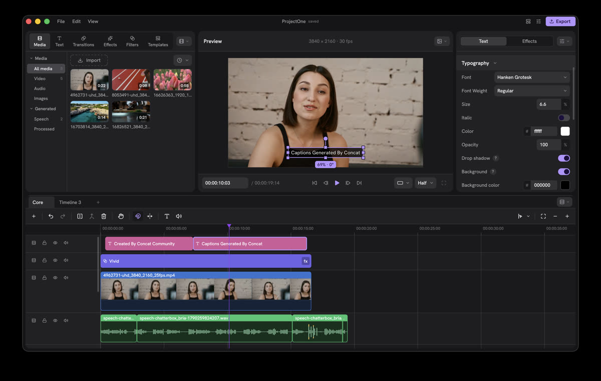
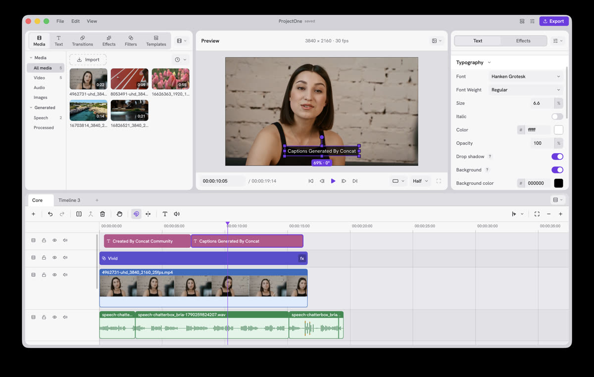

SubtêÂtulos automê¡ticos, voz con IA, eliminaciê³n de fondo y exportaciê³n 4K. Todo funciona en tu computadora, sin cuenta, sin suscripciê³n y sin marca de agua.
Descarga oficial: concatenate.pages.dev
Concat es un programa gratuito para editar video, creado como alternativa a CapCut. Sirve para quien hace Reels, Shorts, TikTok, videos de YouTube, tutoriales y cortes de podcast. Hace lo que normalmente se abre CapCut para hacer (cortar, poner subtêÂtulos, narrar con voz de IA, quitar el fondo, animar), pero sin cobrar, sin pedir cuenta y sin enviar tus videos a internet. Basta con instalarlo en Windows, Mac, Linux o Android; los modelos de IA se descargan una vez y despuê©s funcionan sin internet.
Proyecto de cê³digo abierto del desarrollador Jareer (jub0t/Concat, licencia AGPL-3.0), con mê¡s de 5 mil estrellas en GitHub. Este repositorio es la copia (fork) de ARCKHê para estudio, con la guêÂa en tres idiomas.
Gratis para siempre: nada de suscripciê³n, inicio de sesiê³n ni funciones bloqueadas detrê¡s de un pago.
Nada se envêÂa a la nube. Los subtêÂtulos (Whisper), las voces y el recorte de fondo funcionan en tu equipo, incluso sin internet.
Tiene API JSON-RPC, gRPC y MCP, ademê¡s de una lêÂnea de comandos. Un script o un agente de IA puede cortar video con ê©l.
Whisper local: eliges el tamaê±o del modelo y los subtêÂtulos ya entran con estilo en la lêÂnea de tiempo.
Voces locales gratis o cualquier voz a partir de unos segundos de grabaciê³n.
Personas, objetos, o têº mismo pintas la mê¡scara.
Posiciê³n, escala, rotaciê³n, opacidad, volumen y parê¡metros de efecto, con editor de curvas.
Filtros, transiciones y animaciones de texto renderizados en la GPU, en vivo en la vista previa.
H.264, HEVC y AV1, con color de 10 bits. Audio con limpieza de voz en un botê³n.
Un motor nativo en Rust con compositor en la GPU hace el trabajo pesado: proxies, decodificaciê³n por hardware y vista previa fluida incluso en 4K. La ventana del editor estê¡ hecha en Slint.
El editor con lêÂnea de tiempo magnê©tica, varias pistas y varias lêÂneas de tiempo en el mismo proyecto. En 25 idiomas, incluido el espaê±ol.
concat-cli con probe, render, api (JSON-RPC por la entrada estê¡ndar) y serve (la misma API en un socket en 127.0.0.1:7420). El MCP estê¡ en la documentaciê³n del autor.
La mayorêÂa de las personas solo necesita el instalador. Compilar desde el cê³digo es para quien quiere estudiar el motor o usar la lêÂnea de comandos.
Windows (x86 y ARM), macOS (Intel y Apple), Linux (x86_64 y ARM), Android e iOS. Requisitos del equipo en el sitio del autor.
# descarga oficial concatenate.pages.dev
Rust (versiê³n en src/Cargo.toml), bibliotecas de desarrollo de FFmpeg 7+, cmake y compilador C++.
# macOS brew install ffmpeg cmake
Los subtêÂtulos, las voces y el recorte usan modelos que se descargan una vez desde el menêº Configuraciê³n. Despuê©s funcionan sin conexiê³n.
# en la app
Configuraciê³n ê¢â¬Âº ModelosVersiê³n actual: 0.2.7 (beta, octubre de 2026). Funciona, pero todavêÂa tiene detalles por pulir.
La forma mê¡s fê¡cil: abre el sitio oficial concatenate.pages.dev y haz clic en Download. Te entrega el archivo correcto para tu equipo. En Linux tambiê©n se puede descargar por la terminal.
# sitio oficial (Windows, Mac, Linux, Android) https://concatenate.pages.dev/ # Linux ARM (ej.: DGX Spark), por la terminal gh release download v0.2.7 -R jub0t/Concat -p '*linux-aarch64.deb' sudo apt install ./Concat-0.2.7-linux-aarch64.deb # Linux x86_64: cambia aarch64 por x86_64 (hay .deb, .rpm y .AppImage)
Las versiones todavêÂa no estê¡n firmadas. En Windows, en el aviso de SmartScreen haz clic en Mê¡s informaciê³n ê¢â¬Âº Ejecutar de todas formas. En Mac:
xattr -dr com.apple.quarantine /Applications/Concat.app
En Configuraciê³n, elige el tamaê±o del modelo de subtêÂtulos (Whisper) y las voces. Un modelo mê¡s grande acierta mê¡s y pide mê¡s equipo.
# en la app
Configuraciê³n ê¢â¬Âº Modelos ê¢â¬Âº Descargar
Suelta el archivo en el proyecto y en la lêÂnea de tiempo. Dividir, recortar, ripple, unir, congelar fotograma y cambiar la velocidad. Activa la lêÂnea de tiempo magnê©tica si quieres.
Genera los subtêÂtulos automê¡ticos y ajusta el estilo; crea una narraciê³n con voz local o clona una voz con pocos segundos de audio; quita el fondo de una persona u objeto. Para el sonido, un botê³n limpia la voz y nivela el volumen.
Elige H.264 (el mê¡s compatible), HEVC o AV1, hasta 4K 60 con color de 10 bits. Sin marca de agua.
Para estudiar el motor o dejar que un agente edite. Comandos del propio repositorio:
git clone https://github.com/linnoff88-dev/concat && cd concat/src cargo run -p concat # el editor (modo debug) cargo run -p concat-cli -- probe video.mp4 # lee la informaciê³n del archivo cargo run -p concat-cli -- render video.mp4 out.mp4 --frames 120 cargo run -p concat-cli -- api '{"method":"catalogue.list","kind":"filter"}' cargo run -p concat-cli -- serve # API JSON-RPC en 127.0.0.1:7420
Documentaciê³n de la API y del MCP (en inglê©s): concatenate.pages.dev/docs.
Capturas del propio proyecto: biblioteca de medios, vista previa, panel de propiedades y lêÂnea de tiempo con varias pistas.


Estado verificado el 15/10/2026 en el repositorio original.
.github/workflows-upstream/, fuera de ejecuciê³n; aquê solo corre la publicaciê³n de la guêÂa.